By Elizabeth Dunlop Richter
By Elizabeth Dunlop Richter
Over a decade before Chef Pierre Zimmerman created a logo for Chicago’s “Alsatian Mafia,” [https://classicchicagomagazine.com/the-alsatian-connection/, https://classicchicagomagazine.com/the-alsatian-connection-2-the-alsatian-baker/] fellow Alsace Chef J. Joho left this region of western France to make his culinary debut in our city. He was recruited for a rescue mission, to reopen the legendary fine-dining Maxim’s on the Gold Coast; within two years he would be caught in Chicago culinary drama.
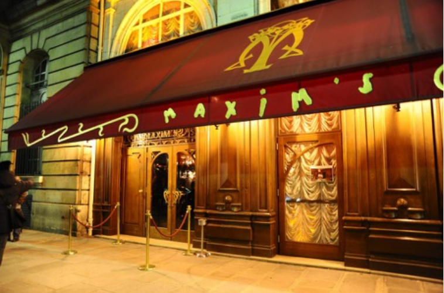
Maxim’s was located on the lower level of the Astor Tower Hotel, replicating famed Maxim’s of Paris. The hotel was designed by Bertrand Goldberg, architect of corncob-shaped Marina City; Maxim’s was run successfully by his wife Nancy. For 20 years, she imported chefs from France and watched them move on to new positions, telling the Tribune in 1973, “I honestly don’t mind them leaving when I feel that they are progressing.” The restaurant closed in 1982 and the property was sold to restauranteur George Badonsky, who reopened the restaurant as Maxim’s of Paris. Following Nancy’s pattern, he went to France to find his new chef and interviewed the young Chef J. Joho on the recommendation of his mentor, Chef Paul Haeberlin, owner of the Michelin three-star restaurant, L`Auberge de l`Ill, in Illhausern, Alsace.
Chef Joho’s talent had developed early; at age six, he donned chef’s garb and helped out in his aunt’s restaurant. Encouraged by his parents, he pursued a career in food, learning the basics from age thirteen with fulfilling apprenticeships. “It’s pleasure to make food for people. It’s a giving process,” he said.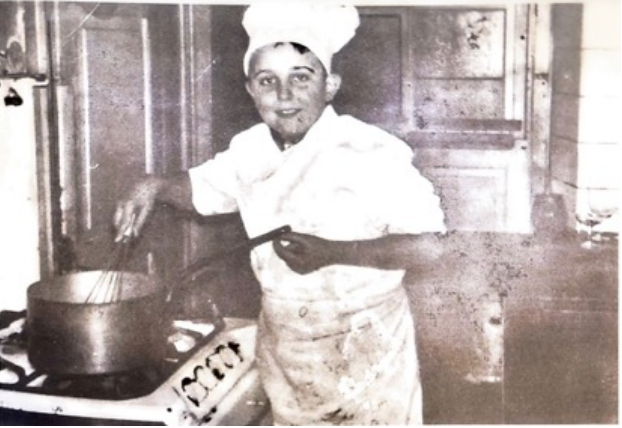
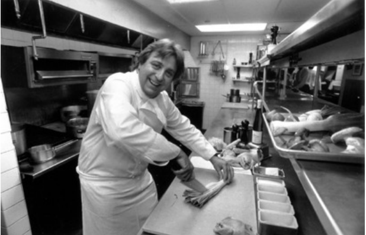
Chef Joho learned enough English to demonstrate his high standards quickly and focused on using only high-quality American ingredients. He continued Maxim’s tradition of top-quality French cuisine with his own touches and Alsace influences, but just as he was establishing his own reputation in Chicago, Badonsky ran into legal and financial difficulties and closed the restaurant in 1986, selling the property back to the Goldbergs. Chef Joho would need to take his talents elsewhere. The property would ultimately be donated to the city of Chicago in 2000 and is now being turned into a private club. In the meantime, a creative businessman named Rich Melman was growing the Lettuce Entertain You enterprise. Starting with Lincoln Park’s R.J. Grunts in 1971, he had built a culinary empire featuring a wide variety of concepts with clever names like Jonathan Livingston Seafood and Lawrence of Oregano.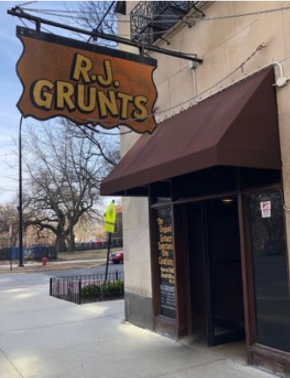
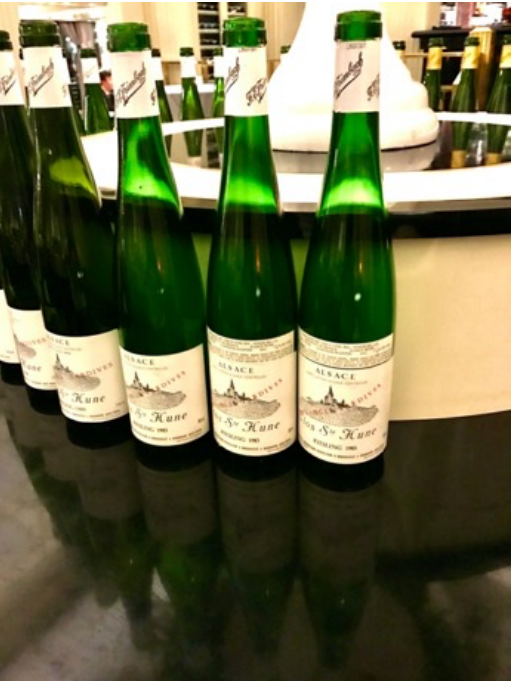
Diners at Everest not only enjoyed a stunning room with dramatic views of the city; they also had original sculpture on their tables. Art is a very important part of Chef Joho’s life. “I’m very involved with art. I know the artist…I cooked for artists and [said to them] just give me a piece of paper with your name…they never just give you paper with their name,” he said. Much to his surprise, when he mentioned to Swiss painter and sculptor Ivo Soldini, his close friend of 20 years, that it would be nice to have a small sculpture on Everest tables, he received a box of small statues!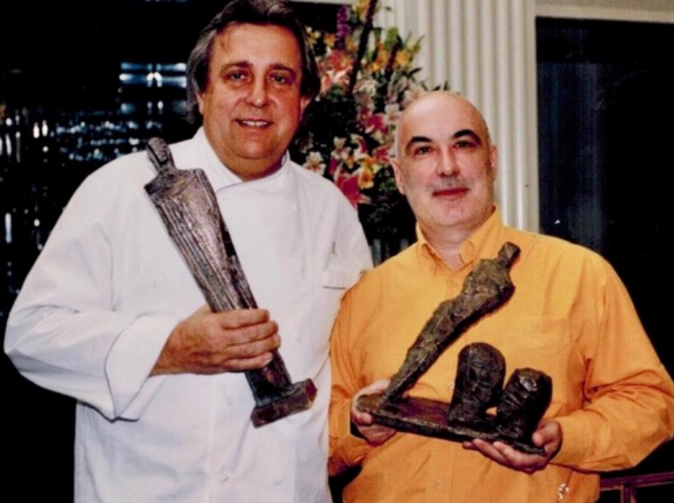
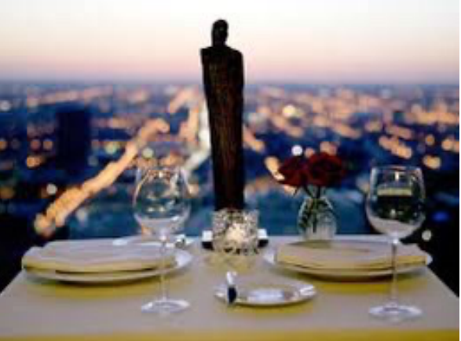
The chef brought a breath of fresh air into the Chicago fine dining world. He made an effort to avoid the stuffy, snobbish aura many associated with high end French restaurants. In 2015 he told Daniel Gerzina of the Eater Chicago newsletter, “I brought something new to the table that was different than all the restaurants. Yes, it’s elegant and formal, but there was never the stuffiness inside. For me the customer is the king of the room, not the waiter. It’s your evening when you come here; it’s not mine.”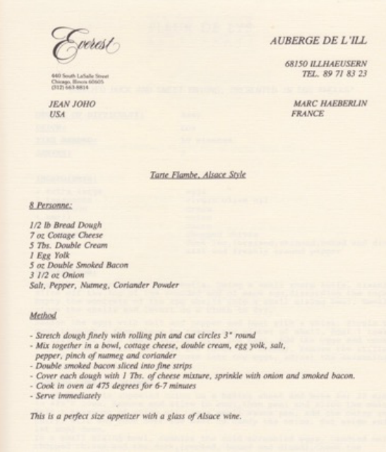
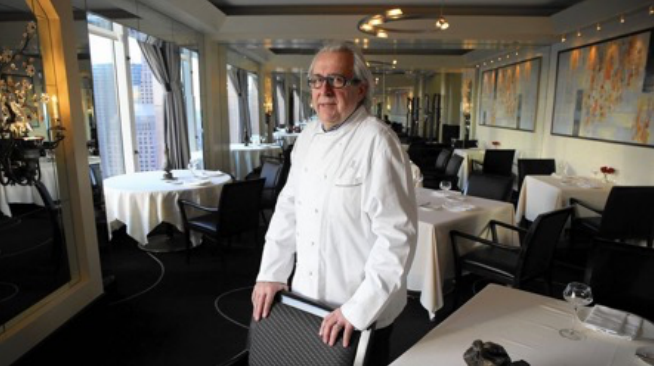
After nearly 35 years, Chef Joho decided to close Everest when its lease ran out in 2020, ironically during Covid, but not because of the pandemic. He told the Chicago Tribune, “Many times in life, you have to know when it’s time for something to end…It feels good, after all this time, to close.” In his tribute to Everest, Chicago Tribune restaurant critic Phil Vittel saluted Chef Joho’s dedication to local produce, “Everest was farm-to-table as a matter of course, long before the term entered the foodie lexicon.” Throughout his career, Chef Joho has valued his international network of chefs. But he has a special feeling for his fellow chefs from Alsace. “[We are] hard working people. [We’ve experienced] too many wars. To succeed is hard work. My wife says…why you do this all day? We like hard work…we like to be with people. When I look at my colleagues…we aren’t afraid of work.” Chef Joho knew Pierre Zimmerman in Alsace; he made it a point to stop at Bistro 110 when Chef Dominique Tougne ran the kitchen. He’s on call to help Chef Jacquy Pfeiffer at the French Pastry School if he’s needed. One regret, he’s seen less of these Alsace colleagues since the beginning of the Covid pandemic.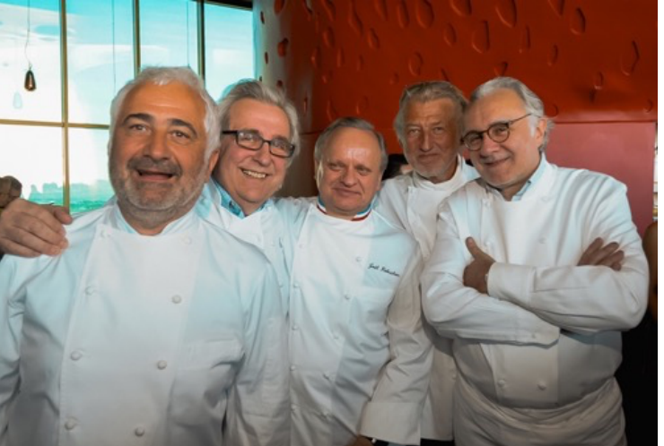
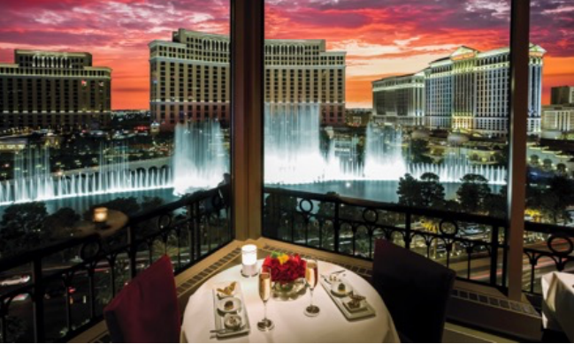
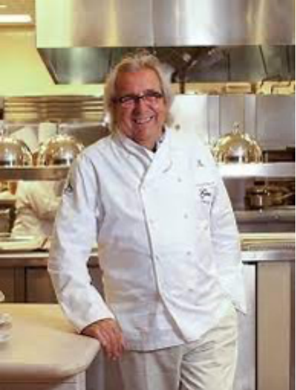
Will his upcoming venture follow a trend? Doubtful. Chef Joho warns that trends come and go, but class always stays. “People know more about food than 25 years ago. So long as it’s good food…I don’t like the name trend…Chanel never goes out of style,” he reminds us. We must now wait for his next announcement!